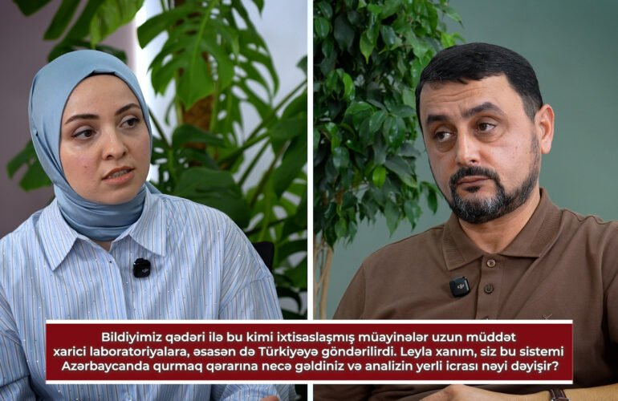
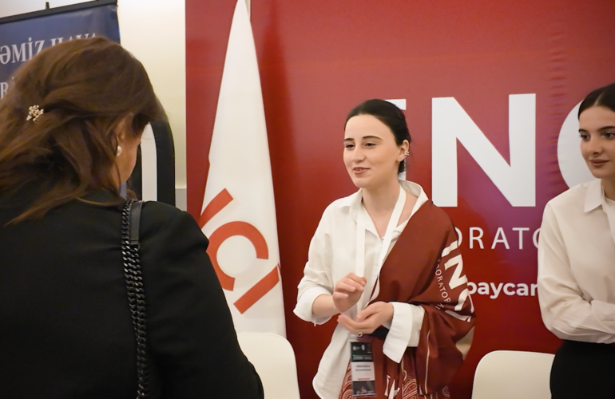

Bakıda zülal elektroforezi və oliqoklonal zolaqların təyini: HYDRASYS 2 SCAN yeniliyi
İnci Laboratoriyalarında HYDRASYS 2 SCAN sistemi ilə zülal elektroforezi və oliqoklonal zolaqların təyini artıq mümkündür.
Klinik laborator diaqnostikanın bütün sahələrində keyfiyyətli və dəqiq xidmət — tam avtomatlaşdırılmış analizatorlar, beynəlxalq standartlar və 4000+ testlik geniş baza.
Tibbi biokimyadan molekulyar mikrobiologiyaya qədər — 10 laborator istiqamət bir ünvanda.

Qan və digər bioloji mayelərdə qlükoza, lipidlər, fermentlər, qaraciyər və böyrək göstəriciləri kimi biokimyəvi parametrlərin təyini.

İmmun sistemin vəziyyətinin, autoimmun xəstəliklərin və infeksiyalara qarşı antitellərin müayinəsi.

Toxuma və hüceyrə nümunələrinin histoloji və sitoloji müayinəsi ilə dəqiq diaqnoz.

Ümumi qan analizi, qan hüceyrələrinin morfologiyası və qanın laxtalanma sisteminin qiymətləndirilməsi.

Şiş markerlərinin təyini ilə onkoloji xəstəliklərin erkən aşkarlanması və müalicənin izlənməsi.

Qida, tozcuq, ev tozu və digər allergenlərə qarşı həssaslığın laborator təyini.

Qanda dərman səviyyələrinin izlənməsi və toksik maddələrin təyini ilə təhlükəsiz müalicə.

Hamiləlik dövründə ana və döl sağlamlığının, yenidoğulmuşlarda isə anadangəlmə xəstəliklərin skrininqi.

Bakterial və göbələk infeksiyalarının əkmə üsulu ilə aşkarlanması və antibiotiklərə həssaslığın təyini.

PZR və digər molekulyar üsullarla virus və bakteriyaların DNT/RNT səviyyəsində dəqiq təyini.
E-randevu, *1113 və ya WhatsApp ilə vaxt seçin.
Filialda və ya evinizdə nümunə götürülür.
Tam avtomatlaşdırılmış analizatorlarda, beynəlxalq standartlarla.
Nəticə onlayn olaraq sizə təqdim edilir.
Yaşa, cinsə və ehtiyaca uyğun 8 check-up paketi. Hansının sizə uyğun olduğunu birlikdə seçək.
İnci Laboratoriyaları biokimya, mikrobiologiya, immunologiya və molekulyar genetika sahələrində tam avtomatlaşdırılmış analizatorlarla xidmət göstərir. EUCAST, CLSI və ISO kimi müstəqil qurumların keyfiyyət standartları əsas götürülür.

İnci Laboratoriyalarında HYDRASYS 2 SCAN sistemi ilə zülal elektroforezi və oliqoklonal zolaqların təyini artıq mümkündür.

Mütəxəssislərimiz beynəlxalq konfransda iştirak edərək laborator diaqnostika sahəsində təcrübələrini bölüşdülər.